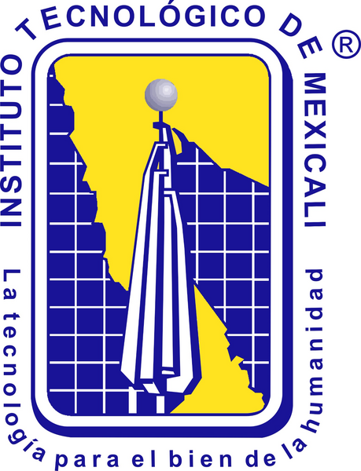

TU RUTA DE ENTRENAMIENTO
COMENZAR LA RUTA01 · Dicing Saw ↗
Nueve etapas. Un proceso conectado.
Selecciona una etapa para abrir su simulador en otra pestaña.
Laboratorio virtual de semiconductores

 Instituto Tecnológico
Instituto Tecnológico
Instituto TecnológicoSelecciona una etapa para abrir su simulador en otra pestaña.